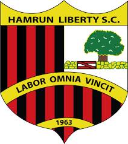
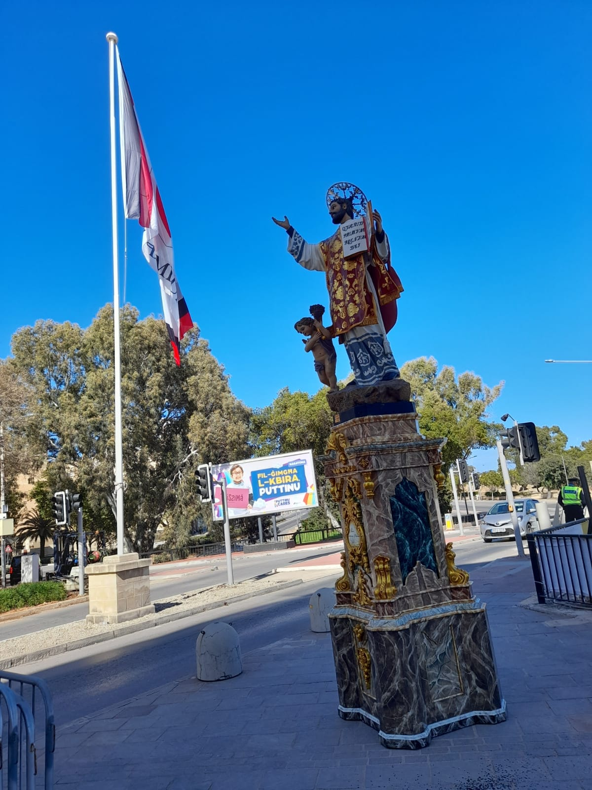

In its early years Hamrun Liberty was the pioneer to the introduction of Hamrun's football nursery. This project saw numerous youngsters train and play
football at the Mile End grounds, in the premise that one day they will make part of the Hamrun Spartans FC senior squad. The concept of youth nurseries
was still new on the island and Hamrun Liberty can boast that it was one of the first clubs in Malta to emulate the educational Sports Centre which had
just been founded by Fr. Hilary Tagliaferro. ...

Hamrun Liberty was and still is Hamrun's hub for other various sports like, Pool, Snooker, Bocci and Amateur Football. For a number of years Hamrun
Liberty also boasted one of the best Basketball teams on the Maltese Islands.

From 2005 a new branch of the club was born, "Hamrun Liberty Sezzjoni Festa" which is responsible for the funding and upkeep of a number of street
decorations used solely in the feast of ‘San Gejtanu in the beginning of August.